Lecture3: VR-EEG情绪感知系统实践
一、EEG情绪识别简述
1. 情绪识别的重要性
情绪识别是人机交互、心理健康监测和娱乐体验的核心技术。通过EEG（脑电图）信号，我们可以非侵入性地捕捉大脑活动，实时分析用户的情绪状态。
2. 情绪的二维模型
情绪的二维模型基于两个维度来描述情绪：
- Arousal（唤醒度）：表示情绪的活跃程度。
- 低唤醒度：平静、放松
- 高唤醒度：兴奋、紧张
- Valence（效价）：表示情绪的正负倾向。
- 正效价：愉快、积极
- 负效价：愤怒、悲伤
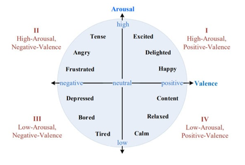
这个模型将复杂的情绪简化为二维坐标，便于分类和分析。
二、情绪识别系统实践
1. 系统概览
基于DEAP数据集的情感识别工作流包括以下步骤：
- 脑电采集：记录EEG信号。
- 数据处理：清洗和预处理数据。
- 特征提取：提取情绪相关特征。
- 分类识别：使用算法识别情绪。
- 情感反馈：将结果反馈给用户。
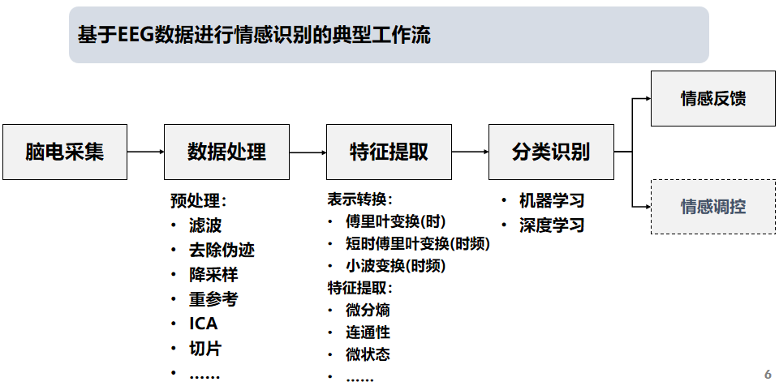
而中间部分就是用代码（Python）解决问题的。
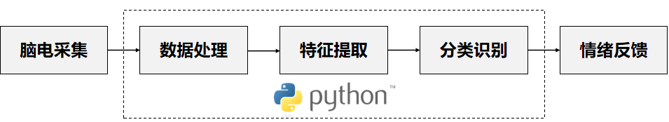
事实上，后面的大作业差不多也是这个流程。
2. 典型工作流细节
2.1 脑电采集
使用设备（如BMI VR一体机）采集EEG信号，通常从前额区域（FP1、FP2位点）获取。
关于 BMI VR 一体机的补充
基础规格：
- 生理传感器：前额双通道脑电 (位点：FP1、FP2，采集频率250Hz) 、前额PPG心率
- 重量：620g，手柄108g
显示光学
- 屏幕：2.89寸Fast-LCD X2
- 分辨率：4320*2160
- 刷新率：90Hz
- 近视：支持佩戴眼镜
定位与交互：手柄交互，双6Dof红外光学手柄
2.2 前端界面
主要包含这俩模块：
- 情感信息模块：实时展示情绪状态（愤怒、恐惧、悲伤、平静、愉快）
- 生物数据模块：显示EEG波形、心率等数据
情感信息模块
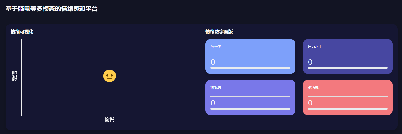
情感示例
以下是前端界面的情感信息模块实时展示的用户情感信息示例。
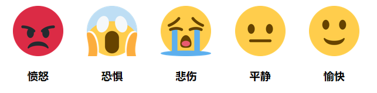
前端界面的情感信息模块实时展示用户情感等信息。
生物数据模块
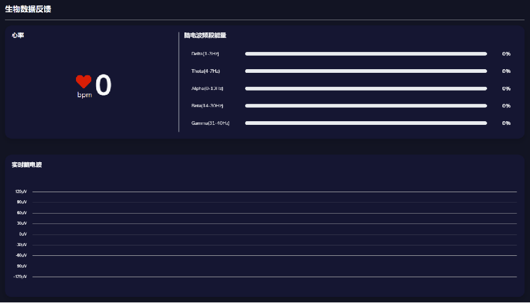
前端界面生物数据模块实时展示采集到的生物数据。
三、课堂任务概览
课堂上老师为我们设计了三个实践任务，帮助我们动手实现情绪感知系统：
- 任务一：连接VR设备，解析多模态数据
- 任务二：基于情绪识别范式采集和分析数据
- 任务三：实现完整的实时情绪感知系统
任务一：连接设备，获得采集数据
任务目标
修改simple.py，完成：
- 连接VR设备
- 打印情感云服务器返回的数据报文
- 解析报文
- 保存数据
多线程并发
-
为什么用多线程？
- 并行性：多个任务同时执行，提高效率
- 避免阻塞：I/O操作（如数据接收）不会中断主程序
- 数据共享：线程间共享内存，便于处理
-
代码示例:
-
数据采集架构
VR设备通过蓝牙连接脑机接口模块，采集生物信号后发送至云端分析，云端通过算法分析后返回结果。
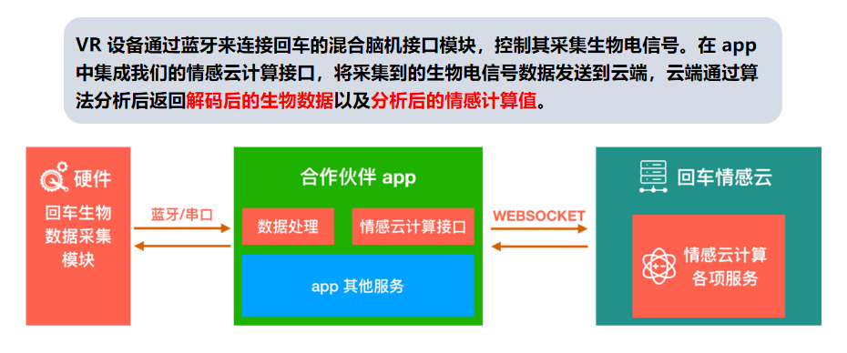
-
多线程实现
- 线程0：收集实时数据
- 线程1：持续采集并编号
- 线程2：创建文件夹并保存数据
- 时间戳对齐：采集完成后逆推对齐
if __name__ == '__main__':
folder_path = create_new_folder()
print("Starting the collecting server...")
t = threading.Thread(target=collect_data)
t2 = threading.Thread(target=put_eeg_result_forever)
t3 = threading.Thread(target=save_array_to_npy, args=(folder_path,))
t.start()
t2.start()
t3.start()
生物数据报文
报文结构：
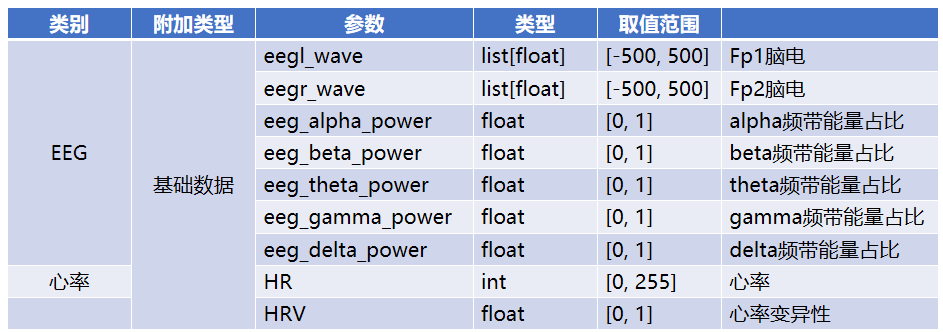
报文实例
以下是一个完整的报文。
< [code: 0] [msg: None] [biodata:subscribe] >>> {'hr-v2': {'hr': 0, 'hrv': 0.0}}
< [code: 0] [msg: None] [biodata:subscribe] >>> {'eeg':
{'eegl_wave': [-72.44, -21.98, -20.91, -55.1, ... , 13.93, -0.03, -20.84],
'eeg_alpha_power': 0.2228,
'eeg_beta_power': 0.3645,
'eeg_theta_power': 0.1757,
'eeg_delta_power': 0.0938,
'eeg_gamma_power': 0.1432,
'eeg_quality': 2}
}
数据包由两条单独的消息组成，每条消息都带有元数据前缀，指示数据的状态和类型：
# [code: 0] 表示数据传输成功（无误）
# [msg: None] 表示没有额外的消息或错误描述
# [biodata:subscribe] 表示这是一个“订阅式”数据流 系统持续从设备接收生物数据
< [code: 0] [msg: None] [biodata:subscribe] >>> {...}
>>> 后面是类似 JSON 的结构，它就包含了这些生物数据。
比如在第一个包是心率数据，其中：
而第二个数据则是 EEG 数据，其对应的参数在上面的表格中已经提到了。
任务二：基于情绪识别范式的数据采集与分析
此部分主要包括：
- 经典范式介绍
- 数据采集与保存
- 数据的预处理与可视化
情感脑机接口实验通常在受控环境中进行，使用刺激材料（如电影、图片、音乐）诱发特定情绪。
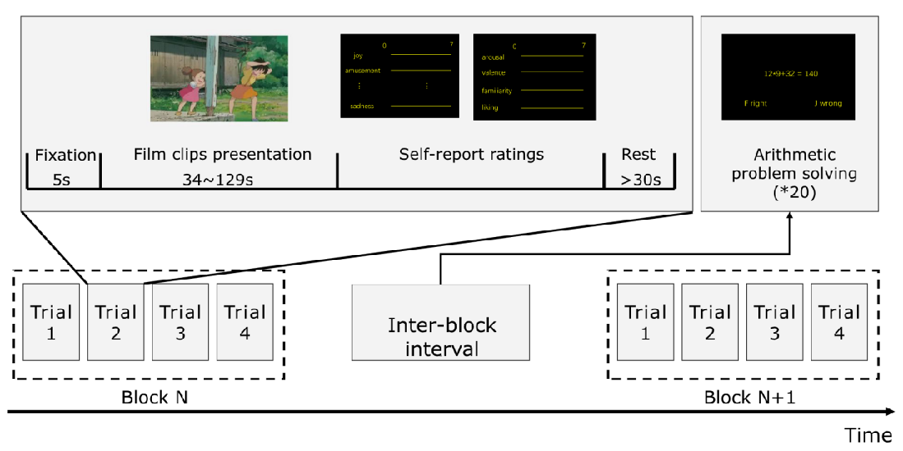
SEED数据集
这是别人已经做好的数据集。
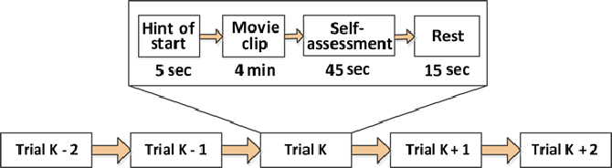
- 全称：SJTU Emotion EEG Dataset
- 来源：上海交通大学吕宝粮团队
- 用途：公开的情感EEG数据集，用于研究情绪识别
- 链接：SEED数据集
VR-情绪EEG数据采集：
- 环境：YVR影院
- 任务：观看情绪视频（happy、neutral、sad，每段6分钟），同步采集EEG
- 流程：按顺序观看，中间可休息
任务
把采集到的EEG数据分成5个波段，并可视化。
# 将EEG数据分成5个波段
from EEG_feature_extactor.DE import bandpass_filter
freq_bands = [
[1, 4], # delta
[4, 8], # theta
[8, 14], # alpha
[14, 31], # beta
[31, 49] # gamma
]
band_names = ['Delta band (0.5–4 Hz)', 'Theta band (4–8 Hz)', 'Alpha band (8–13 Hz)',
'Beta band (13–30 Hz)', 'Gamma band (30–45 Hz)']
# ==== 选一个通道进行可视化 ====
channel_idx = 0
# ==== 设置时间范围（秒） ====
t_start = 10 # seconds
t_end = 12 # seconds
start_idx = int(t_start * sampling_rate)
end_idx = int(t_end * sampling_rate)
raw_signal = EEG_data[channel_idx][start_idx:end_idx]
print(raw_signal.shape)
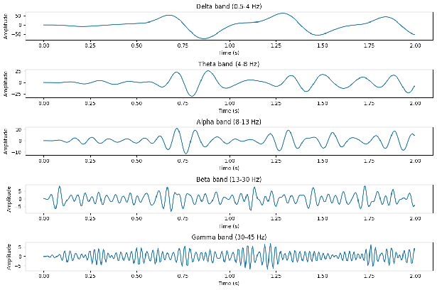
任务三：实现完整的实时情绪感知系统
EEG微分熵特征提取
定义：微分熵（Differential Entropy, DE）是香农信息熵的连续形式，用于量化EEG信号的复杂性和不确定性。
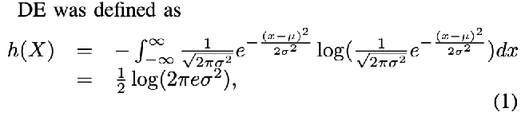
参考文献：Duan, R.-N., Zhu, J.-Y., & Lu, B.-L. (2013). Differential Entropy Feature for EEG-based Emotion Classification.(NER).
任务
提取5个波段的微分熵特征，作为情绪分类的输入。
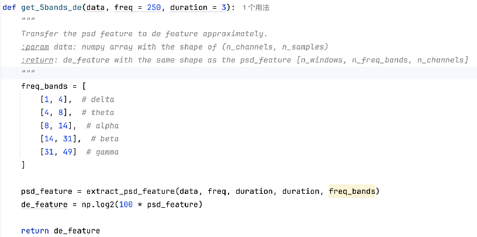
基于SVM的EEG情绪分类
- 方法：使用支持向量机（SVM）进行分类，最大化不同类别之间的间隔，找到最佳超平面分离不同情绪。
- 评估指标：
- 准确率（Accuracy）
- 精确率（Precision）
- 召回率（Recall）
- F1分数
- 混淆矩阵
SVM模型部署
将训练好的SVM模型集成到app.py，实现实时情绪感知。
def reasoning(model, eeg_data):
# eeg_data: shape (2, 3*250) -> 特征提取后变成 1D 向量
# model: 训练好的模型
# return: 预测结果 0-positive, 1-neutral, 2-negative
# Extract differential entropy (DE) features for 5 frequency bands
de_features = get_5bands_de(eeg_data)
# Assuming this returns a 1D vector (e.g., 10 features: 5 bands × 2 channels)
# Ensure features are in the correct shape for SVM (2D array: [1, n_features])
de_features = de_features.reshape(1, -1)
# Perform prediction using the pre-trained SVM model
prediction = model.predict(de_features)
# Return the predicted emotion class (0, 1, or 2)
return int(prediction[0])